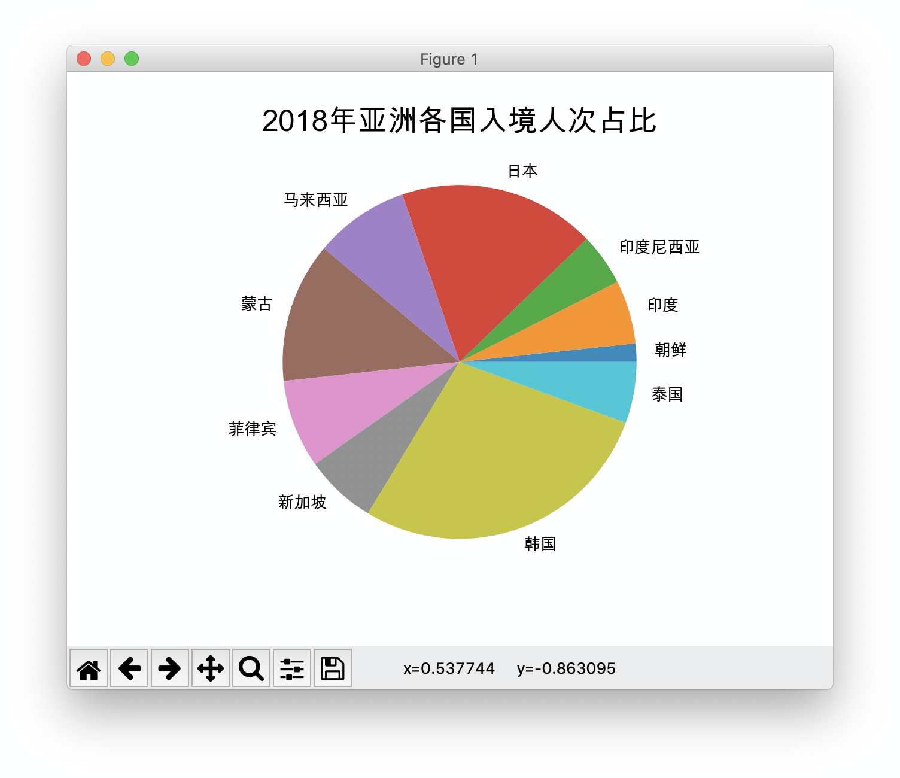
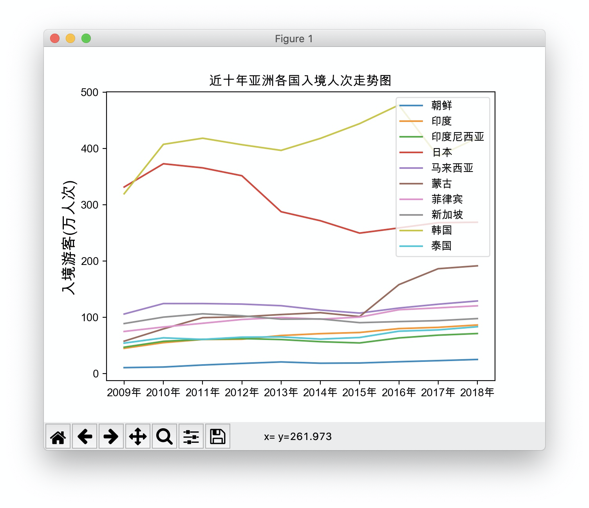
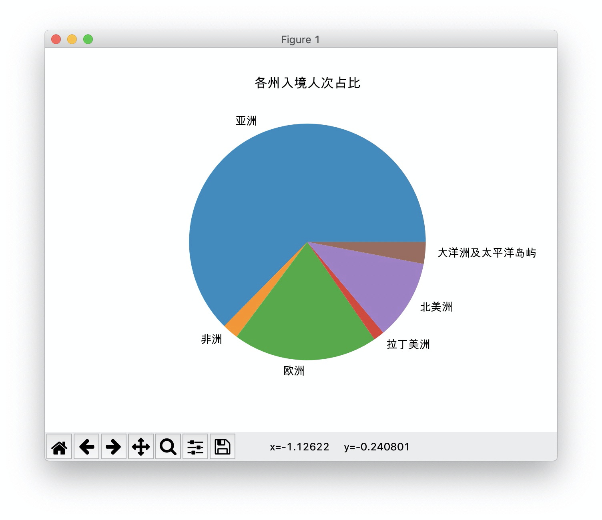
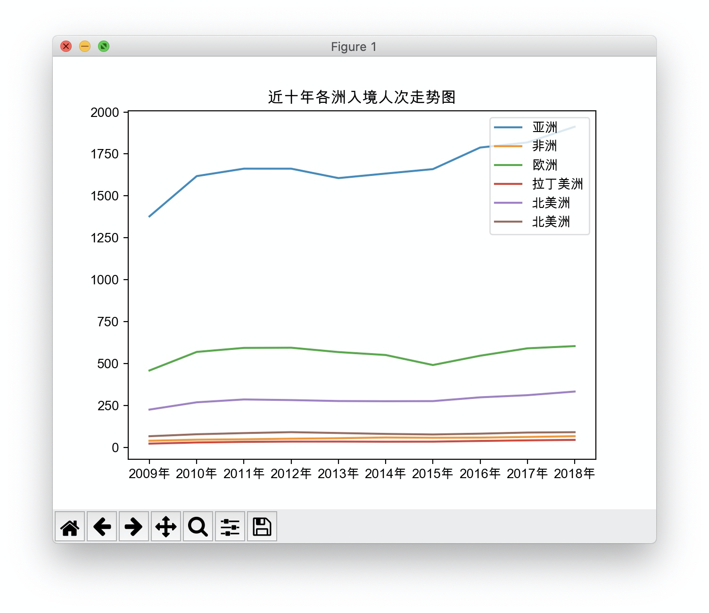

题目如下：
共由6个函数组成：
第一个函数爬取数据并转为DataFrame；
第二个函数爬取数据后存入Excel中，对于解题来说是多余的，仅当练手以及方便核对数据；
后面四个函数分别对应题目中的四个matplotlib图，为了看起来简洁，所有耦合较高。
下面对每个函数详细介绍
#!/usr/bin/env python3
# -*- coding:utf-8 -*-
import requests
import json
import openpyxl
import pandas
import matplotlib.pyplot as plt
import re在url1中可以查到数据，由于网站是异步加载，要抓包得到url2，得到json数据。
用.text方法读取，并使用json.loads()函数转为python对象。
对数据获取和重组要结合url2的数据结构，分层拆开打印 后就可以轻松看到数据获取和重组的部分了。
最后一步pandas.DataFrame(df_dict, index=years[1:], columns=names)获取到的DataFrame列名为地区，行索引为年份，
在使用.stack().unstack(level=0)将其行列互转。
def get_data_to_df():
"""
获取国家数据网上的旅游行业数据并转为dataframe返回
:return: dataframe
"""
url = "http://data.stats.gov.cn/easyquery.htm?cn=C01" # 数据查询地址
# json数据地址
url2 = "http://data.stats.gov.cn/easyquery.htm?m=QueryData&dbcode=hgnd&rowcode=zb&colcode=sj&wds=%5B%5D&dfwds=%5B%7B%22wdcode%22%3A%22zb%22%2C%22valuecode%22%3A%22A0K05%22%7D%5D&k1=1571666678154&h=1"
headers = {
'user-agent': 'Mozilla/5.0 (Windows NT 10.0; Win64; x64) AppleWebKit'
'/537.36 (KHTML, like Gecko) Chrome/67.0.3396.62 Safari/537.36'}
html = requests.get(url2, headers=headers).text
data = json.loads(html, encoding='utf-8')
names = [i["name"] for i in data["returndata"]["wdnodes"][0]["nodes"]]
years = [i["name"] for i in data["returndata"]["wdnodes"][1]["nodes"]]
years.insert(0, "指标")
df_dict = {}
for num in range(len(names)):
sub_data = [i["data"]["strdata"] for i in data["returndata"]["datanodes"][num * 10:num * 10 + 10]]
sub_data.insert(0, names[num])
df_dict[sub_data[0]] = sub_data[1:]
# print(sub_data)
df = pandas.DataFrame(df_dict, index=years[1:], columns=names).stack().unstack(level=0)
return dfurl解析部分同上。
为了简便，对excel写入数据使用append方法，所以年份作为数据的第一行，要在最前面加上一个列名，存入A1单元格。
def get_data_to_excel():
"""
获取国家数据网上的旅游行业数据并存到data.xlsx中
:return: .xlsx文件
"""
# json数据地址
url2 = "http://data.stats.gov.cn/easyquery.htm?m=QueryData&dbcode=hgnd&rowcode=zb&colcode=sj&wds=%5B%5D&dfwds=%5B%7B%22wdcode%22%3A%22zb%22%2C%22valuecode%22%3A%22A0K05%22%7D%5D&k1=1571666678154&h=1"
headers = {
'user-agent': 'Mozilla/5.0 (Windows NT 10.0; Win64; x64) AppleWebKit'
'/537.36 (KHTML, like Gecko) Chrome/67.0.3396.62 Safari/537.36'}
html = requests.get(url2, headers=headers).text
data = json.loads(html, encoding='utf-8')
names = [i["name"] for i in data["returndata"]["wdnodes"][0]["nodes"]]
years = [i["name"] for i in data["returndata"]["wdnodes"][1]["nodes"]]
years.insert(0, "指标")
workbook = openpyxl.Workbook()
worksheet = workbook.active
worksheet.append(years)
for num in range(len(names)):
sub_data = [i["data"]["strdata"] for i in data["returndata"]["datanodes"][num * 10:num * 10 + 10]]
sub_data.insert(0, names[num])
worksheet.append(sub_data)
# print(sub_data)
workbook.save("data.xlsx")因为下面4个图都是matplotlib的，所以直接在这里进行中文和负号乱码问题的处理
plt.rcParams['font.sans-serif'] = ['Arial Unicode MS'] # 配置语言
plt.rcParams['axes.unicode_minus'] = False # 解决负号乱码调用get_data_to_df()得到DataFrame，然后取出2018年的一列数据，再转为dict方便数据获取。
因为DataFrame中的行索引是url上的原始数据 如“朝鲜入境游客”，而要输出的图例只是国家名，所有对countries 加上 “入境游客”来匹配DataFrame中的对应人次。
def asian_countries_pie():
countries = ["朝鲜", "印度", "印度尼西亚", "日本", "马来西亚", "蒙古", "菲律宾", "新加坡", "韩国", "泰国"]
df = dict(get_data_to_df()["2018年"])
data = [df[i + "入境游客"] for i in countries]
plt.pie(data, labels=countries)
plt.title('2018年亚洲各国入境人次占比', fontsize=18)
plt.show()
# asian_countries_pie() # 图1
获取DataFrame的列名后，转为list，并反序排列，得到2009-2018正序的年份列表。
从DataFrame中获取对应的国家的10年数据，后均反序排列处理，数据要转为float才能传入matplotlib的plot中。
def asian_countries_line():
countries = ["朝鲜", "印度", "印度尼西亚", "日本", "马来西亚", "蒙古", "菲律宾", "新加坡", "韩国", "泰国"]
df = get_data_to_df()
years = df.columns.values.tolist()[::-1]
data1 = [float(i) for i in dict(df.loc[countries[0] + "入境游客"]).values()][::-1]
data2 = [float(i) for i in dict(df.loc[countries[1] + "入境游客"]).values()][::-1]
data3 = [float(i) for i in dict(df.loc[countries[2] + "入境游客"]).values()][::-1]
data4 = [float(i) for i in dict(df.loc[countries[3] + "入境游客"]).values()][::-1]
data5 = [float(i) for i in dict(df.loc[countries[4] + "入境游客"]).values()][::-1]
data6 = [float(i) for i in dict(df.loc[countries[5] + "入境游客"]).values()][::-1]
data7 = [float(i) for i in dict(df.loc[countries[6] + "入境游客"]).values()][::-1]
data8 = [float(i) for i in dict(df.loc[countries[7] + "入境游客"]).values()][::-1]
data9 = [float(i) for i in dict(df.loc[countries[8] + "入境游客"]).values()][::-1]
data10 = [float(i) for i in dict(df.loc[countries[9] + "入境游客"]).values()][::-1]
plt.plot(years, data1, label=countries[0])
plt.plot(years, data2, label=countries[1])
plt.plot(years, data3, label=countries[2])
plt.plot(years, data4, label=countries[3])
plt.plot(years, data5, label=countries[4])
plt.plot(years, data6, label=countries[5])
plt.plot(years, data7, label=countries[6])
plt.plot(years, data8, label=countries[7])
plt.plot(years, data9, label=countries[8])
plt.plot(years, data10, label=countries[9])
plt.title("近十年亚洲各国入境人次走势图")
plt.ylabel('入境游客(万人次)', fontsize=14) # y轴名称，字号
plt.legend(loc='upper right') # 这里为显示图例，并配置图例位置为右上角
plt.show()
# asian_countries_line() # 图2
获取行索引，regions
在行索引中找到名字里带“洲”的，取得去掉后面“入境游客”四个字符的名称即洲名。
在DataFrame 2018年 一整列数据中 取得洲游客数据。
def continents_pie():
df = get_data_to_df()
regions = df.index.tolist()
continents = [i[:-4] for i in regions if re.search("洲", i)]
data = [v for k, v in df["2018年"].to_dict().items() if (k[:-4] in continents)]
plt.pie(data, labels=continents)
plt.title("各州入境人次占比")
plt.show()
# continents_pie() # 图3
获取洲名称列表同上。
本次要取各大洲的一整行数据，用到DataFrame.loc[行索引] 方法。
def continents_line():
df = get_data_to_df()
years = df.columns.tolist()[::-1]
regions = df.index.tolist()
continents = [i[:-4] for i in regions if re.search("洲", i)]
Asia = [float(i) for i in df.loc[continents[0] + "入境游客"].to_dict().values()][::-1]
Africa = [float(i) for i in df.loc[continents[1] + "入境游客"].to_dict().values()][::-1]
Europe = [float(i) for i in df.loc[continents[2] + "入境游客"].to_dict().values()][::-1]
Latin = [float(i) for i in df.loc[continents[3] + "入境游客"].to_dict().values()][::-1]
America = [float(i) for i in df.loc[continents[4] + "入境游客"].to_dict().values()][::-1]
Oceania = [float(i) for i in df.loc[continents[5] + "入境游客"].to_dict().values()][::-1]
plt.plot(years, Asia, label=continents[0])
plt.plot(years, Africa, label=continents[1])
plt.plot(years, Europe, label=continents[2])
plt.plot(years, Latin, label=continents[3])
plt.plot(years, America, label=continents[4])
plt.plot(years, Oceania, label=continents[4])
plt.title("近十年各洲入境人次走势图")
plt.legend(loc="upper right")
plt.show()
continents_line() # 图4